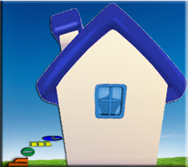
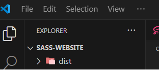
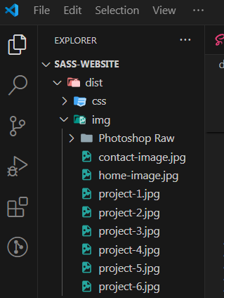
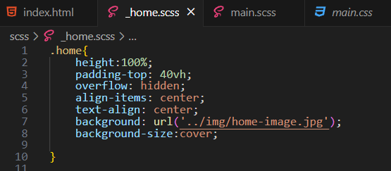
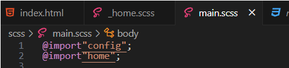
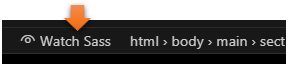
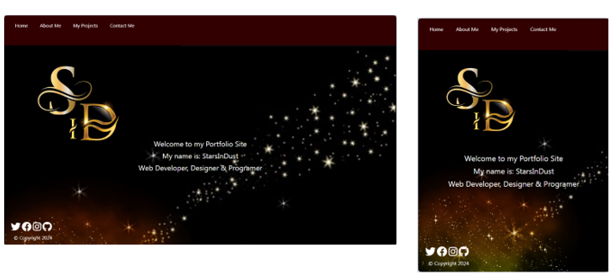
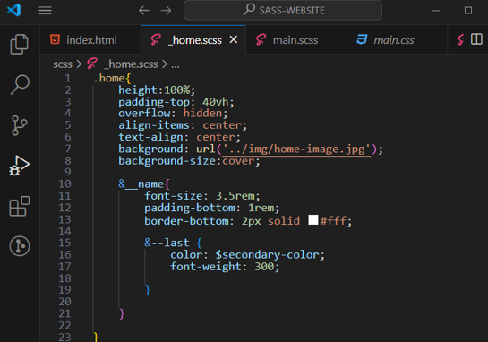
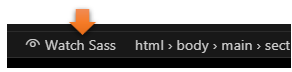
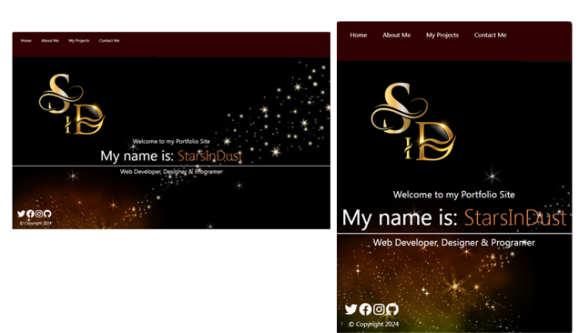

~3 The Home Page SASS~
7/22/2024
Go to main.scss to import Home
Go to index.html to test the page
Testing the Text on the home page
Go to index.html to test the page

Warning, in order for this code to work you must have your images to your website, in the image file, and with the same name as I am using. You can create your own images if you want.
Your image folder is inside your dist folder
 Create Home partial SCSS
Create a new partial and name it _home.scss
.home{
height:100%;
padding-top: 40vh;
overflow: hidden;
align-items: center;
text-align: center;
background: url('../img/home-image.jpg');
background-size:cover;
}

Go to main.scss to import Home
@import"home";

Turn on SASS
At the bottom of the app

Go to index.html to test the page

Styling the Home Text
We are just going to be targeting the fonts inside of the .home rule. We will be using the &. The & sign is used in SCSS when we want to nest something, which is exactly what we are going to do.
.home{
height:100%;
padding-top: 40vh;
overflow: hidden;
align-items: center;
text-align: center;
background: url('../img/home-image.jpg');
background-size:cover;
&__name{
font-size: 3.5rem;
padding-bottom: 1rem;
border-bottom: 2px solid #fff;
&--last {
color: $secondary-color;
font-weight: 300;
}
}
}

Testing the Text on the home page
Turn on SASS
Remember, you will need to have SASS on for things to work correctly.
At the bottom of the app

Go to index.html to test the page
